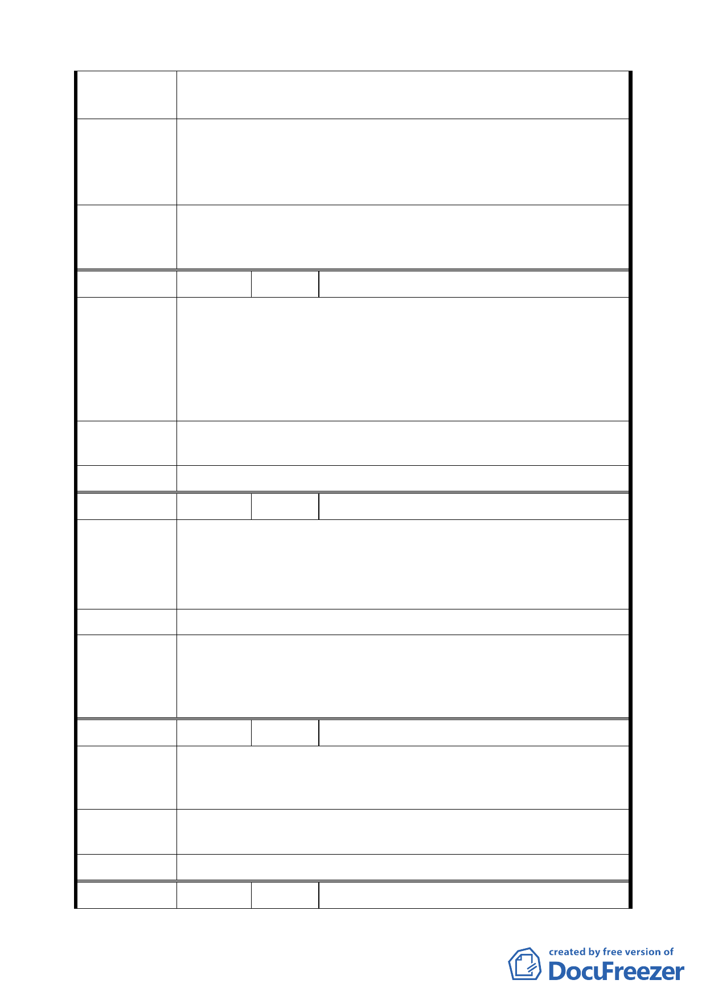

陳情理由
一、談合建耗時耗力，難在 1－5 年內完成。
二、獎勵標準：基準容積×10％、5％、3％較少些。
一、第一期開發時間應放寬至 3 年內、第二期 5 年內、第三期
建議辦法
6 年內完成。
二、獎勵標準請放寬至：3 年內 12％、3 年－5 年內 7％、5
年－6 年內 5％。
開發時程獎勵標準修正為第 1 期於配合本計畫案公告實施後 2
委 員 會 決 議 年內開發者，給予 10％基準容積獎勵，第 2、3 期獎勵標準予
以取消，回歸「臺北市都市更新自治條例」時程獎勵規定。
編
號9
陳情人 謝文熙等 4 人
一、位置：松山區復興南路一段 47 巷 9 弄 1 至 19 號。
二、復興南路一段 47 巷 9 弄巷道，前 47 巷後市民大道皆已是
陳情理由
餐廳、美髮業、服飾、咖啡店…等營業商店，再加上緊鄰
微風廣場百貨公司，每日人潮擁擠，已不符住家條件，故
9 弄居民連署簽名，願台北市政府利市民之所需，能更改
與鄰地段一樣為商三區。
建議辦法
本地段第 3-1 種住（特）區，已不符現況。願能變更為商三區
的容積率及建蔽率，以利市民之所需。
委 員 會 決 議 同編號 6。
編 號 10 陳情人 王貴美等
一、位置：大安區安東街 35 巷 2 至 12 號。
陳情理由
二、本小區塊小於 200 坪，在安東街 35 巷之南側，而右邊為
16 樓之大樓。
三、本區在公園邊皆為老舊 4 樓以下，有礙市容。
建 議 辦 法 希望本小區塊專案納入都更範圍，以改善市容。
本案計畫範圍以沿市民大道（新生北路至基隆路段）兩側進深
委員會決議
第一個完整街廓所圍地區為原則，陳情基地與北側計畫範圍內
街廓相隔 6 公尺計畫道路，非未於兩側進深第一個完整街廓所
圍地區，本項仍依公展計畫辦理。
編 號 11 陳情人 黃光偌等 2 人
因為京華城百貨公司在旁生意多不好，假如能改商業區會比以
陳 情 理 由 前人口多，生意會比較好做，現在生意差的很多，不能生存生
活。
建議辦法
是否台北市市民大道五段 139 號 1 樓、2 樓能改為商業區，商
三、商四都可以，蓋 20 多層樓。
委 員 會 決 議 同編號 3。
編 號 12 陳情人 富邦人壽保險股份有限公司
8